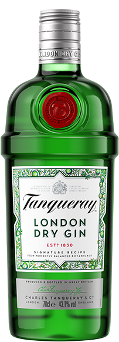

Tanqueray Gin
Tanqueray London Dry Gin er en skøn gin med en dejlig smag. Ginnen er baseret på udvalgte bonitalcs som enebær, kvan og koriander, der gør den oplagt til brug i flere ginbaserede drinks og cocktails
Viktor, 22
"Hold da op! Sikke en oplevelse”
Cecilie, 23
"Wow! Den perfekte drink til mig”
Mette, 25
"Den her drink vil jeg lave til mig og pigernes næste forfest”